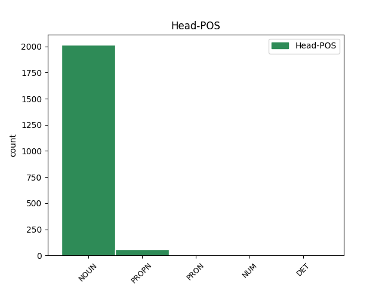

Distribution of features within this leaf

Agreement Rules sorted by frequency.
- When the dependent token is the conjunct(conj) of the head token, and the head token is NOUN and the dependent token is NOUN.
1 Żona _ _ _ _ 0 _ _ _
2 kamienicznika _ _ _ _ 0 _ _ _
3 prowadziła _ _ _ _ 0 _ _ _
4 sklep _ _ _ _ 0 _ _ _
5 z _ _ _ _ 0 _ _ _
6 żyrandolami żyrandol NOUN subst:pl:inst:m3 Case=Ins|Gender=Masc|Number=Plur|SubGender=Masc3 0 _ _ _
7 i _ _ _ _ 0 _ _ _
8 żarówkami żarówka NOUN subst:pl:inst:f Case=Ins|Gender=Fem|Number=Plur 6 conj _ SpaceAfter=No
9 . _ _ _ _ 0 _ _ _
1 Żadna _ _ _ _ 0 _ _ _
2 ze _ _ _ _ 0 _ _ _
3 stron strona NOUN subst:pl:gen:f Case=Gen|Gender=Fem|Number=Plur 0 _ _ _
4 procesu proces NOUN subst:sg:gen:m3 Case=Gen|Gender=Masc|Number=Sing|SubGender=Masc3 3 mod@poss _ _
5 nie _ _ _ _ 0 _ _ _
6 odwoływała _ _ _ _ 0 _ _ _
7 się _ _ _ _ 0 _ _ _
8 od _ _ _ _ 0 _ _ _
9 wyroku _ _ _ _ 0 _ _ _
10 . _ _ _ _ 0 _ _ _
1 - _ _ _ _ 0 _ _ _
2 Zrobimy _ _ _ _ 0 _ _ _
3 pana pan NOUN subst:sg:acc:m1 Case=Acc|Gender=Masc|Number=Sing|SubGender=Masc1 0 _ _ _
4 landrata landrat NOUN subst:sg:acc:m1 Case=Acc|Gender=Masc|Number=Sing|SubGender=Masc1 3 flat _ _
5 na _ _ _ _ 0 _ _ _
6 szosie _ _ _ _ 0 _ _ _
7 w _ _ _ _ 0 _ _ _
8 podgórskim _ _ _ _ 0 _ _ _
9 pejzażu _ _ _ _ 0 _ _ _
10 . _ _ _ _ 0 _ _ _
1 – _ _ _ _ 0 _ _ _
2 żeby _ _ _ _ 0 _ _ _
3 zmienić _ _ _ _ 0 _ _ _
4 trochę _ _ _ _ 0 _ _ _
5 trybiki _ _ _ _ 0 _ _ _
6 w _ _ _ _ 0 _ _ _
7 tej _ _ _ _ 0 _ _ _
8 ma _ _ _ _ 0 _ _ _
9 w _ _ _ _ 0 _ _ _
10 tej _ _ _ _ 0 _ _ _
11 ma machina NOUN subst:sg:loc:f Case=Loc|Gender=Fem|Number=Sing 0 _ _ _
12 machinie machina NOUN subst:sg:loc:f Case=Loc|Gender=Fem|Number=Sing 11 appos _ SpaceAfter=No
13 . _ _ _ _ 0 _ _ _
1 Zginęło _ _ _ _ 0 _ _ _
2 także _ _ _ _ 0 _ _ _
3 4 _ _ _ _ 0 _ _ _
4 Egipcjan Egipcjanin PROPN subst:pl:gen:m1 Case=Gen|Gender=Masc|Number=Plur|SubGender=Masc1 0 _ _ _
5 , _ _ _ _ 0 _ _ _
6 w _ _ _ _ 0 _ _ _
7 tym _ _ _ _ 0 _ _ _
8 dwóch _ _ _ _ 0 _ _ _
9 policjantów policjant NOUN subst:pl:gen:m1 Case=Gen|Gender=Masc|Number=Plur|SubGender=Masc1 4 appos _ SpaceAfter=No
10 , _ _ _ _ 0 _ _ _
11 oraz _ _ _ _ 0 _ _ _
12 6 _ _ _ _ 0 _ _ _
13 napastników _ _ _ _ 0 _ _ _
14 . _ _ _ _ 0 _ _ _
1 ładnie _ _ _ _ 0 _ _ _
2 nawiązał _ _ _ _ 0 _ _ _
3 eś _ _ _ _ 0 _ _ _
4 do _ _ _ _ 0 _ _ _
5 Łazarza Łazarz PROPN subst:sg:gen:m1 Case=Gen|Gender=Masc|Number=Sing|SubGender=Masc1 0 _ _ _
6 i _ _ _ _ 0 _ _ _
7 przepaści przepaść NOUN subst:sg:gen:f Case=Gen|Gender=Fem|Number=Sing 5 conj _ _
8 potępiając _ _ _ _ 0 _ _ _
9 mnie _ _ _ _ 0 _ _ _
10 i _ _ _ _ 0 _ _ _
11 skazując _ _ _ _ 0 _ _ _
12 na _ _ _ _ 0 _ _ _
13 nie _ _ _ _ 0 _ _ _
14 . _ _ _ _ 0 _ _ _
1 - _ _ _ _ 0 _ _ _
2 Wolę _ _ _ _ 0 _ _ _
3 was wy PRON ppron12:pl:acc:m1:sec Case=Acc|Gender=Masc|Number=Plur|Person=2|PronType=Prs|SubGender=Masc1 0 _ _ _
4 niż _ _ _ _ 0 _ _ _
5 mój _ _ _ _ 0 _ _ _
6 rozsądek rozsądek NOUN subst:sg:acc:m3 Case=Acc|Gender=Masc|Number=Sing|SubGender=Masc3 3 conj _ SpaceAfter=No
7 . _ _ _ _ 0 _ _ _
1 Zamiast _ _ _ _ 0 _ _ _
2 trzystu trzysta NUM num:pl:gen:m3:congr Case=Gen|Gender=Masc|Number=Plur|NumType=Card|SubGender=Masc3 0 _ _ _
3 dwudziestu _ _ _ _ 0 _ _ _
4 ośmiu _ _ _ _ 0 _ _ _
5 obiektów obiekt NOUN subst:pl:gen:m3 Case=Gen|Gender=Masc|Number=Plur|SubGender=Masc3 2 appos _ _
6 elektryfikacyjnych _ _ _ _ 0 _ _ _
7 , _ _ _ _ 0 _ _ _
8 załoga _ _ _ _ 0 _ _ _
9 wybudowała _ _ _ _ 0 _ _ _
10 trzysta _ _ _ _ 0 _ _ _
11 sześćdziesiąt _ _ _ _ 0 _ _ _
12 cztery _ _ _ _ 0 _ _ _
13 . _ _ _ _ 0 _ _ _
1 Nas my PRON ppron12:pl:acc:f:pri Case=Acc|Gender=Fem|Number=Plur|Person=1|PronType=Prs 0 _ _ _
2 , _ _ _ _ 0 _ _ _
3 kobiety kobieta NOUN subst:pl:acc:f Case=Acc|Gender=Fem|Number=Plur 1 appos _ SpaceAfter=No
4 , _ _ _ _ 0 _ _ _
5 obyczaj _ _ _ _ 0 _ _ _
6 ciągle _ _ _ _ 0 _ _ _
7 jeszcze _ _ _ _ 0 _ _ _
8 skazuje _ _ _ _ 0 _ _ _
9 na _ _ _ _ 0 _ _ _
10 bierne _ _ _ _ 0 _ _ _
11 wyczekiwanie _ _ _ _ 0 _ _ _
12 . _ _ _ _ 0 _ _ _
1 Alkohol _ _ _ _ 0 _ _ _
2 przestaje _ _ _ _ 0 _ _ _
3 działać _ _ _ _ 0 _ _ _
4 i _ _ _ _ 0 _ _ _
5 ten ten DET adj:sg:nom:m1:pos Case=Nom|Gender=Masc|Number=Sing|PronType=Dem|SubGender=Masc1 0 _ _ _
6 czy _ _ _ _ 0 _ _ _
7 ów ów NOUN subst:sg:nom:m1 Case=Nom|Gender=Masc|Number=Sing|SubGender=Masc1 5 conj _ _
8 zaczyna _ _ _ _ 0 _ _ _
9 ziewać _ _ _ _ 0 _ _ _
10 . _ _ _ _ 0 _ _ _
1 - _ _ _ _ 0 _ _ _
2 Co _ _ _ _ 0 _ _ _
3 polski _ _ _ _ 0 _ _ _
4 Kościół _ _ _ _ 0 _ _ _
5 wniesie _ _ _ _ 0 _ _ _
6 do _ _ _ _ 0 _ _ _
7 Europy Europa PROPN subst:sg:gen:f Case=Gen|Gender=Fem|Number=Sing 0 _ _ _
8 narodów naród NOUN subst:pl:gen:m3 Case=Gen|Gender=Masc|Number=Plur|SubGender=Masc3 7 mod@poss _ SpaceAfter=No
9 ? _ _ _ _ 0 _ _ _
1 Czy _ _ _ _ 0 _ _ _
2 bywasz _ _ _ _ 0 _ _ _
3 czasami czas NOUN subst:pl:inst:m3 Case=Ins|Gender=Masc|Number=Plur|SubGender=Masc3 4 udep _ _
4 tygryskiem tygrysek NOUN subst:sg:inst:m2 Case=Ins|Gender=Masc|Number=Sing|SubGender=Masc2 0 _ _ _
5 ? _ _ _ _ 0 _ _ _
1 Dysponują _ _ _ _ 0 _ _ _
2 one _ _ _ _ 0 _ _ _
3 stu sto NUM num:pl:inst:m3:congr Case=Ins|Gender=Masc|Number=Plur|NumType=Card|SubGender=Masc3 0 _ _ _
4 czterdziestu _ _ _ _ 0 _ _ _
5 trzema _ _ _ _ 0 _ _ _
6 traktorami _ _ _ _ 0 _ _ _
7 , _ _ _ _ 0 _ _ _
8 osiemdziesięcioma _ _ _ _ 0 _ _ _
9 snopowiązałkami snopowiązałka NOUN subst:pl:inst:f Case=Ins|Gender=Fem|Number=Plur 3 conj _ SpaceAfter=No
10 . _ _ _ _ 0 _ _ _
Disagree Examples:
1 200 _ _ _ _ 0 _ _ _
2 z _ _ _ _ 0 _ _ _
3 nich _ _ _ _ 0 _ _ _
4 chronionych _ _ _ _ 0 _ _ _
5 jest _ _ _ _ 0 _ _ _
6 jako _ _ _ _ 0 _ _ _
7 zabytki zabytek NOUN subst:pl:nom:m3 Case=Nom|Gender=Masc|Number=Plur|SubGender=Masc3 0 _ _ _
8 architektury architektura NOUN subst:sg:gen:f Case=Gen|Gender=Fem|Number=Sing 7 mod@poss _ _
9 ogrodniczej _ _ _ _ 0 _ _ _
10 . _ _ _ _ 0 _ _ _
1 - _ _ _ _ 0 _ _ _
2 5 _ _ _ _ 0 _ _ _
3 dni _ _ _ _ 0 _ _ _
4 obradowała _ _ _ _ 0 _ _ _
5 w _ _ _ _ 0 _ _ _
6 Warszawie _ _ _ _ 0 _ _ _
7 konferencja konferencja NOUN subst:sg:nom:f Case=Nom|Gender=Fem|Number=Sing 0 _ _ _
8 Stowarzyszenia stowarzyszenie NOUN subst:sg:gen:n Case=Gen|Gender=Neut|Number=Sing 7 mod@poss _ _
9 Prawa _ _ _ _ 0 _ _ _
10 Międzynarodowego _ _ _ _ 0 _ _ _
11 . _ _ _ _ 0 _ _ _
1 A _ _ _ _ 0 _ _ _
2 co _ _ _ _ 0 _ _ _
3 czyta _ _ _ _ 0 _ _ _
4 teraz _ _ _ _ 0 _ _ _
5 minister minister NOUN subst:sg:nom:m1 Case=Nom|Gender=Masc|Number=Sing|SubGender=Masc1 0 _ _ _
6 edukacji edukacja NOUN subst:sg:gen:f Case=Gen|Gender=Fem|Number=Sing 5 mod@poss _ SpaceAfter=No
7 ? _ _ _ _ 0 _ _ _
1 A _ _ _ _ 0 _ _ _
2 odkąd _ _ _ _ 0 _ _ _
3 Kaziński _ _ _ _ 0 _ _ _
4 wydał _ _ _ _ 0 _ _ _
5 wojnę _ _ _ _ 0 _ _ _
6 właścicielom właściciel NOUN subst:pl:dat:m1 Case=Dat|Gender=Masc|Number=Plur|SubGender=Masc1 0 _ _ _
7 psów pies NOUN subst:pl:gen:m2 Case=Gen|Gender=Masc|Number=Plur|SubGender=Masc2 6 mod@poss _ SpaceAfter=No
8 , _ _ _ _ 0 _ _ _
9 jest _ _ _ _ 0 _ _ _
10 jeszcze _ _ _ _ 0 _ _ _
11 trudniej _ _ _ _ 0 _ _ _
12 . _ _ _ _ 0 _ _ _
1 A _ _ _ _ 0 _ _ _
2 przyjrzyj _ _ _ _ 0 _ _ _
3 się _ _ _ _ 0 _ _ _
4 treści treść NOUN subst:sg:dat:f Case=Dat|Gender=Fem|Number=Sing 0 _ _ _
5 katechezy katecheza NOUN subst:sg:gen:f Case=Gen|Gender=Fem|Number=Sing 4 mod@poss _ _
6 w _ _ _ _ 0 _ _ _
7 Polsce _ _ _ _ 0 _ _ _
8 międzywojennej _ _ _ _ 0 _ _ _
9 . _ _ _ _ 0 _ _ _